Ordenar Arrays en JAVA
¿Por qué ordenar los datos?
→ Es mucho más eficiente trabajar con datos ordenados.
¿Qué podemos ordenar?
→ Cualquier estructura con elementos ordenables, ya sean números, caracteres u objetos.
Los problemas más comunes en la informática son la búsqueda y la ordenación. En este caso, el proceso de ordenar un array consiste en recolocar los elementos que lo componen (ya sea de mayor a menor o viceversa), con el fin de acelerar la búsqueda posterior de la información.
En este aspecto, existe una multitud de algoritmos de ordenamiento, como por ejemplo el de Intercambio/Selección, que se comporta de la siguiente manera.
Cómo ordenar arrays en Java con bucles y variables auxiliares
Esta opción es la más manual, puesto que tendremos que programar todo el algoritmo, pero es una buena práctica que nos ayudará a comprender mejor el manejo de arrays. El algoritmo de Selección es el algoritmo más sencillo que podemos utilizar a la hora de ordenar arrays. Básicamente, consiste en intercambiar elementos dentro del array hasta conseguir que este quede ordenado.
La idea es recorrer el array y comparar cada elemento con todos los siguientes para buscar el apropiado con el que intercambiarlo. Si ordenamos de forma ascendente (de menor a mayor), entonces buscaremos elementos menores para hacer el intercambio. Por el contrario, si ordenamos de forma descendente (de mayor a menor), buscaremos elementos mayores para intercambiar.
Vamos a verlo directamente con un ejemplo para que lo entendamos mejor. Utilizaremos el siguiente array:
int array[] = {4,6,2,8,7};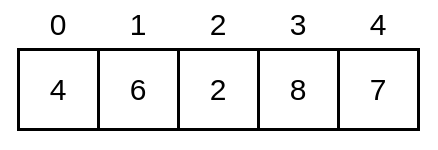
- De forma ascendente (de menor a mayor)
Lo vamos a ordenar de forma ascendente (de menor a mayor) utilizando el siguiente código:
for (int i = 0; i < array.length-1; i++) {
for (int j = i+1; j < array.length ; j++) {
if (array[j]<array[i]){
int aux = array[j];
array[j] = array[i];
array[i] = aux;
}
}
}Vamos a analizarlo paso a paso:
- Como puedes comprobar hay dos bucles for y un if anidados.
- El for externo nos permite recorrer todos los elementos del array desde el primero (posición 0) hasta el penúltimo, por eso en la condición hemos puesto array.length-1. Está hecho así intencionadamente, puesto que queremos comparar cada elemento con todos los siguientes (todos los que están a su derecha). El último elemento no tiene más elementos detrás, por lo que no tiene sentido compararlo con nada. El dato que se encuentre en la posición i será el dato de referencia en cada iteración de este bucle.
- El bucle for interno sirve para recorrer todos los elementos que se encuentran posicionados después del dato de referencia, es decir, todos los que están a la derecha de la posición i. Cada uno de estos elementos los tenemos que comparar con el dato que se encuentra en la posición i, es decir, con el dato de referencia.
- De esto se encarga la instrucción if. Si encontramos en la posición j algún dato con valor menor al de referencia, lo intercambiamos con el que está en la posición i. Si no, no hacemos nada. Por eso la condición del if es array[j]<array[i]. Si se cumple la condición, se ejecutan las instrucciones de las líneas 4, 5 y 6, que básicamente realizan el intercambio con ayuda de una variable auxiliar. Si se produce un intercambio, entonces el valor de referencia cambia, puesto que se ha sustituido lo que había en la posición i.
Vamos a ver la ejecución paso a paso y cómo se va modificando el array en cada iteración de los bucles...
- Iteración 1: Primera iteración del for externo.
La variable i toma valor 0.
El for interno también comienza y la variable j toma valor i+1, es decir 1.
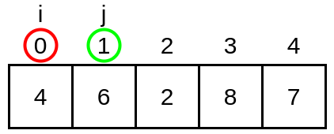
Ahora es el turno del if. Comparamos array[j]<array[i]. En este caso, la condición no es cierta porque array[j] tiene valor 6, y array[i] tiene valor 4. No se cumple que array[j] sea menor, por lo que no se ejecuta el cuerpo del if. y por lo tanto de momento no se realiza ningún intercambio.
El for interno avanza. El valor de j se incrementa una unidad (j++) y como sigue siendo menor que length (j < array.length), continúa su ejecución.
La variable i sigue siendo 0.
La variable j ahora es 2.
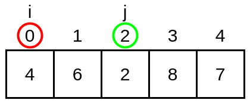
Se ejecuta de nuevo la instrucción if, y en este caso la condición es verdadera (array[j]<array[i]) puesto que el dato que se encuentra en la posición j (2) es menor que el almacenado en la posición i (4). En este caso sí se ejecuta el cuerpo del if, y se produce un intercambio:
1. Se copia en la variable aux lo que hay en array[j] (2)
2. Se copia en array[j] lo que hay en array[i] (4)
3. Se copia en array[i] lo que hay en la variable aux (2)
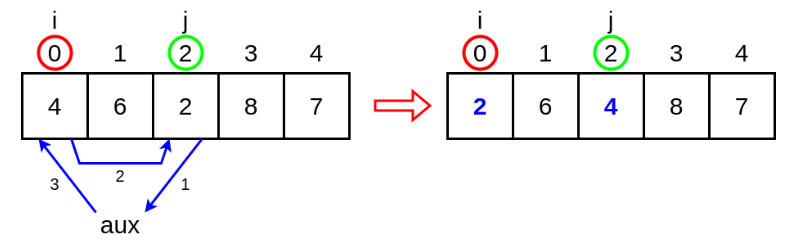
El for interno avanza de nuevo, incrementando el valor de j en una unidad. Ahora j tiene valor 3 y se repite de nuevo la comprobación del if.
La variable i sigue siendo 0.
La variable j ahora vale 3.
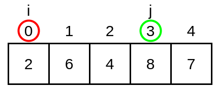
En este caso no se cumple la condición array[j]<array[i], puesto que 8 no es menor que 2. No se ejecuta ninguna de las instrucciones del cuerpo del if ,y el for interno avanza de nuevo incrementando el valor de j.
La i sigue siendo 0.
La j ahora es 4.
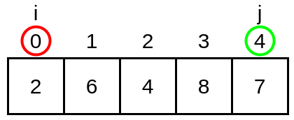
En este caso ocurre lo mismo. El valor que hay en la posición j no es menor al que se encuentra en la posición i, por lo que la condición del if no se cumple y no se ejecuta nada.
El for interno incrementa de nuevo el valor de j en una unidad, por lo que pasa a valer 5. Como length en este ejemplo también es 5, el bucle interno se detiene. Ha completado todas sus iteraciones.
¿Qué hemos conseguido hasta aquí? Comparar el dato de referencia (posición 0) con todos los demás e intercambiarlo por otro menor siempre que ha sido posible. Ahora toca avanzar el bucle externo.
- Iteración 2: Segunda iteración del for externo.
La variable i se incrementa en una unidad (i++) y pasa a valer 1.
El for interno empieza de nuevo. La j toma valor i+1, es decir 2.
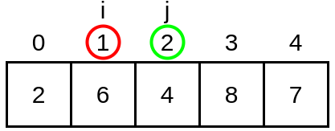
¿Qué ocurre si ahora comprobamos la condición del if: array[j]<array[i]? Pues que es cierta, porque 4 es menor que 6. En este caso, se ejecutan las instrucciones del if y se intercambian los valores de las dos posiciones:
1. El valor 4 que se encuentra en la posición j se copia en la variable aux.
2. El valor 6 de la posición i se copia en la posición j.
3. Por último el valor de aux, que es 4, se copia en la posición i.
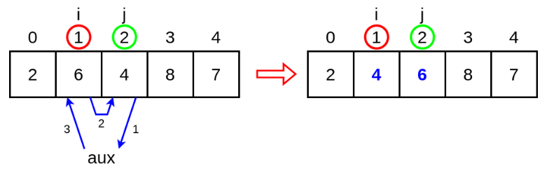
Las dos iteraciones que quedan del bucle interno no van a producir intercambios, puesto que 8 y 7 son mayores que 4, que es el valor de referencia actual, por lo que este bucle interno completará sus iteraciones sin más cambios.
- Iteración 3: Tercera iteración del for externo.
El for externo avanza de nuevo incrementando el valor de i en una unidad y el for interno comienza de nuevo desde la posición i+1.
La variable i ahora vale 2.
La variable j ahora vale 3.
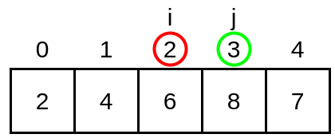
Como puedes comprobar, en esta iteración no se realizará ningún intercambio puesto que el valor que hay en la posición 2 (6) es menor que todos los elementos siguientes: 8 y 7. El bucle interno completará sus iteraciones sin cambios.
- Iteración 4: Cuarta y última iteración del for externo.
Hemos llegado a la última iteración del for externo. El valor de i se incrementa pasando a valer 3, y el for interno comienza de nuevo inicializando el valor de j a i+1.
El valor de i ahora es 3.
El valor de j ahora es 4.
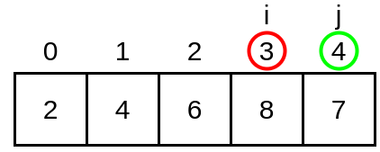
Supongo que ya te habrás dado cuenta. El valor que hay en la posición j (7) es menor que el valor que hay en la posición i (8), por tanto, la condición del if (array[j]<array[i]) se cumple y se produce el intercambio entre ambas posiciones:
1. El valor 7 de la posición 4 se copia en la variable aux.
2. El valor 8 de la posición 3 se copia en la posición 4.
3. El valor 7 almacenado en aux se copia en la posición 3.
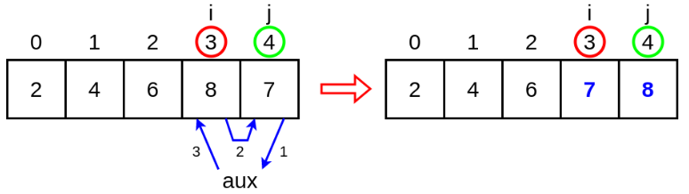
El bucle interno finaliza sus iteraciones y el bucle externo también, puesto que ha alcanzado la penúltima posición (tal y como vimos al principio). La ejecución termina y el array queda ordenado de menor a mayor. Compruébalo:
for (int i = 0; i < array.length; i++) {
System.out.println(array[i]);
}
- De forma descendente (de mayor a menor)
¿Cómo sería el algoritmo si lo que buscamos es ordenar el array de forma descendente? Pues exactamente igual, la única diferencia es que la comprobación que tenemos que hacer en el if ahora es: array[j]>array[i] en vez de array[j]<array[i]:
for (int i = 0; i < array.length-1; i++) {
for (int j = i+1; j < array.length ; j++) {
if (array[j]>array[i]){
int aux = array[j];
array[j] = array[i];
array[i] = aux;
}
}
}De esta forma, el intercambio se produce cuando el valor de la posición j sea menor que el valor de referencia de la posición i. Así conseguimos que quede ordenado de mayor a menor.
ACTIVIDAD. Analiza paso a paso el algoritmo descendente de la misma forma que lo hemos hecho en el caso anterior.